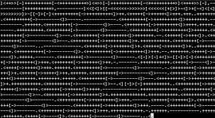

BRAINF**CK
Também conhecido como BF, é uma linguagem de programação esotérica notada pelo seu extremo minimalismo, criada por Urban Müller, em 1993. Ela é uma linguagem Turing completa, desenhada para desafiar e confundir os programadores, e não é útil para uso prático.
Bubble-Sort

O bubble sort, ou ordenação por flutuação (literalmente "por bolha"), é um algoritmo de ordenação dos mais simples. A ideia é percorrer um conjunto de elementos diversas vezes, e a cada passagem fazer flutuar para o topo o maior elemento da sequência. Essa movimentação lembra a forma como as bolhas em um tanque de água procuram seu próprio nível, e disso vem o nome do algoritmo.